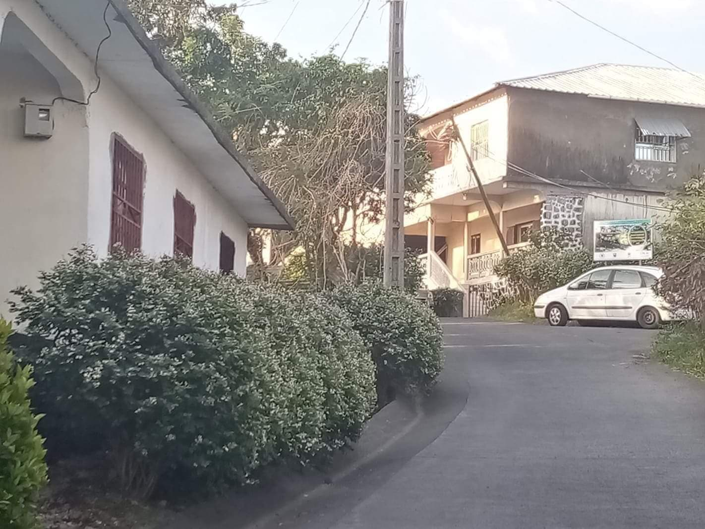

BIENVENUE AUX COMORES !
Les Comores est un pays africain composé de 3 îles différentes (Mohéli, Grande Comore, Anjouan). Ce pays se situe dans l'Océan Indien. Dans cette page vous pouvez voir défiler plusieurs photos de vacances.
VILLE DE MORONI
Voici ce que j'ai visité dans la capitale :
MUSEE DES COMORES

Ce musée est un très bon endroit pour en apprendre sur l'histoire des Comores.
VILLE DE MVUNI
Mvuni est une ville de Grande Comore (Ngazidja), situé à environ 6km de la capitale. Le décor embellit cette ville rurale en la rendant plus chouette à visiter.

On peut aussi clairement voir les couchers de soleil :
BONUS
Il existe aussi une vidéo YouTube qui présente cette ville :Le volcan Karthala est un lieu incontournable aux Comores. Se trouvant dans l'île de Grande Comore, il culmine à 2 361 m.